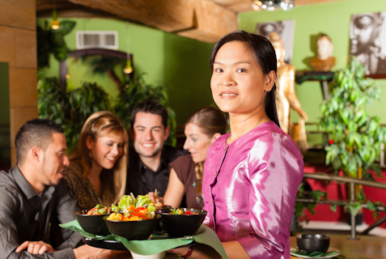

About Us
Curbside Thai brings the rich flavor of Thailand to North Carolina. Master Chef Sajja Adulet, with over 35 years of experience at the House of Asia, now offers that same fine dining to the streets of Charlotte with our modern mobile food truck.
This is not bland vendor food packaged in greasy paper boxes! Sample his acclaimed cuisine at our various mobile locations throughout downtown Charlotte from 11 a.m. to 7 p.m. on Monday through Thursday, and 11 a.m. to 11 p.m. on Friday and Saturday. Taste the difference! If you can't get away from your desk, Curbside Thai will deliver.
©Contact us to cater your next party and experience what Carolina Traveler calls the finest Asian food on or off the streets of Charlotte.